Índice General de Contenidos
Guía interactiva de aprendizaje sobre Movimiento Ondulatorio. Selecciona cualquier sección para saltar directamente a ella.
Mapa Mental
Línea de Tiempo
Conceptos y Unidades
Demostraciones
Plano GeoGebra
Onda en Cuerda
Modos Normales & Estacionarias
Efecto Doppler Teórico
Lab: Simulador Efecto Doppler
Comparativa 3D de Ondas
Polarización Espaciotemporal
Proyecto LIGO & Detección
Lab: Interferómetro & Chirp
Problemas (5 Fases)
Taller Interactivo
Glosario Científico
Referencias APA 7
Contraportada y Créditos
Taxonomía del Movimiento Ondulatorio: cinemática, dinámica de medios, leyes energéticas y fenómenos.
Evolución Histórica de la Teoría Ondulatoria
Desde el principio del frente de onda de Huygens hasta la síntesis electromagnética de Maxwell.
Christiaan Huygens (Principio del Frente de Onda)
Formuló que todo punto de un frente de onda primario actúa como una fuente puntual de ondas esféricas secundarias. La envolvente tangencial de estas ondas elementales conforma el nuevo frente de onda, explicando con exactitud geométrica las leyes de reflexión y refracción.
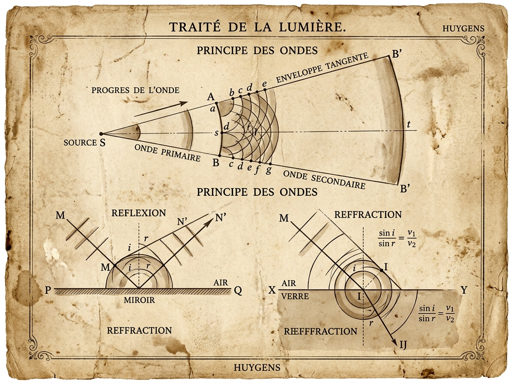
Jean le Rond d'Alembert (Ecuación Diferencial de Onda)
Derivó la primera ecuación diferencial en derivadas parciales de la física matemática al modelar las vibraciones mecánicas de una cuerda elástica tensa: $\frac{\partial^2 y}{\partial x^2} = \frac{1}{v^2}\frac{\partial^2 y}{\partial t^2}$.
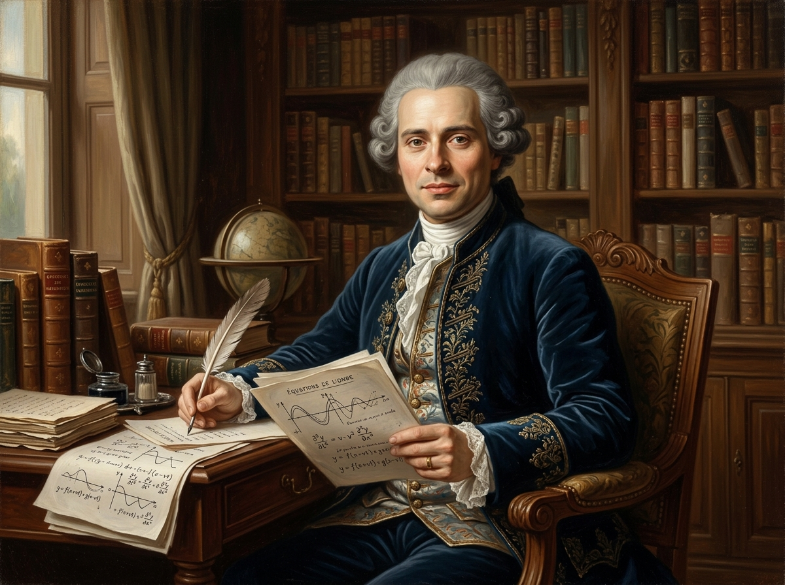
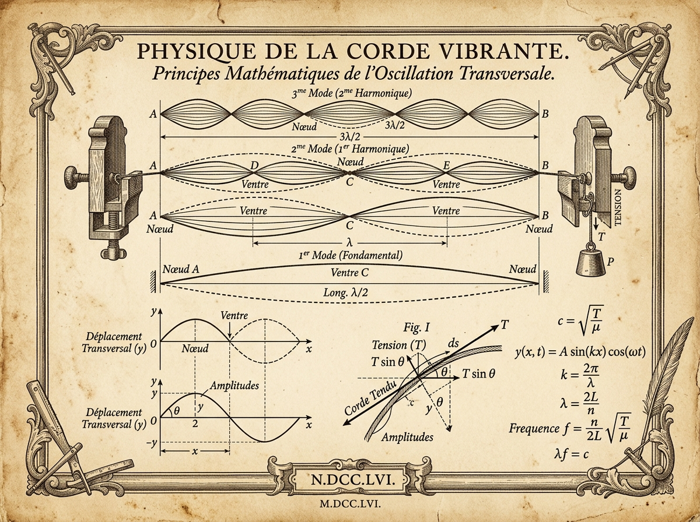
Leonhard Euler (Solución General de d'Alembert)
Demostró la solución analítica general de la ecuación de onda en términos de funciones arbitrarias que representan perturbaciones viajeras progresivas y regresivas sin dispersión: $y(x,t) = f(x - vt) + g(x + vt)$.
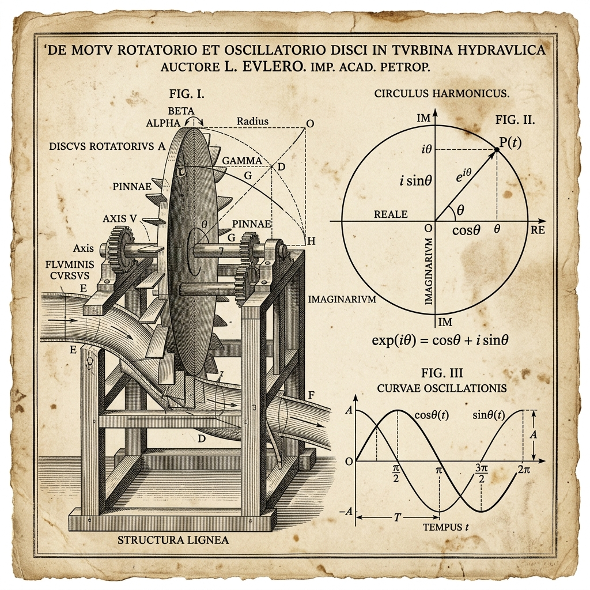
Thomas Young (Principio de Interferencia)
Realizó el célebre experimento de la doble rendija, demostrando irrefutablemente el principio de superposición ondulatoria. Probó que las ondas pueden sumarse destructivamente para anularse o constructivamente para reforzarse.
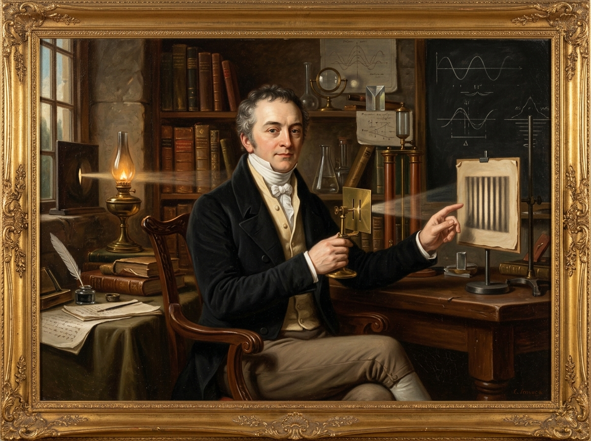
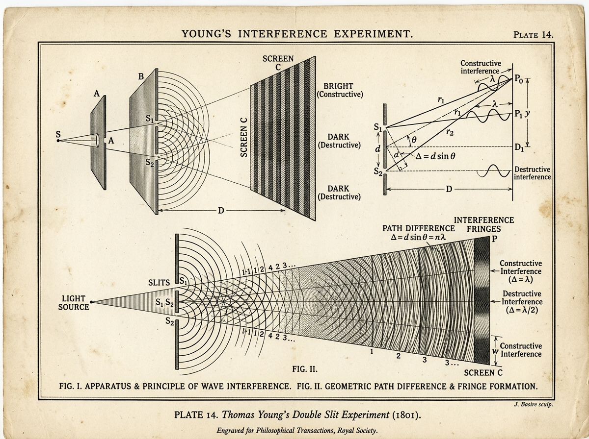
Christian Doppler (Corrimiento de Frecuencia Doppler)
Descubrió que la frecuencia de onda percibida por un observador difiere de la frecuencia emitida por la fuente cuando existe movimiento relativo entre ambos, sentando las bases de la acústica médica, el radar y la astrofísica observacional.
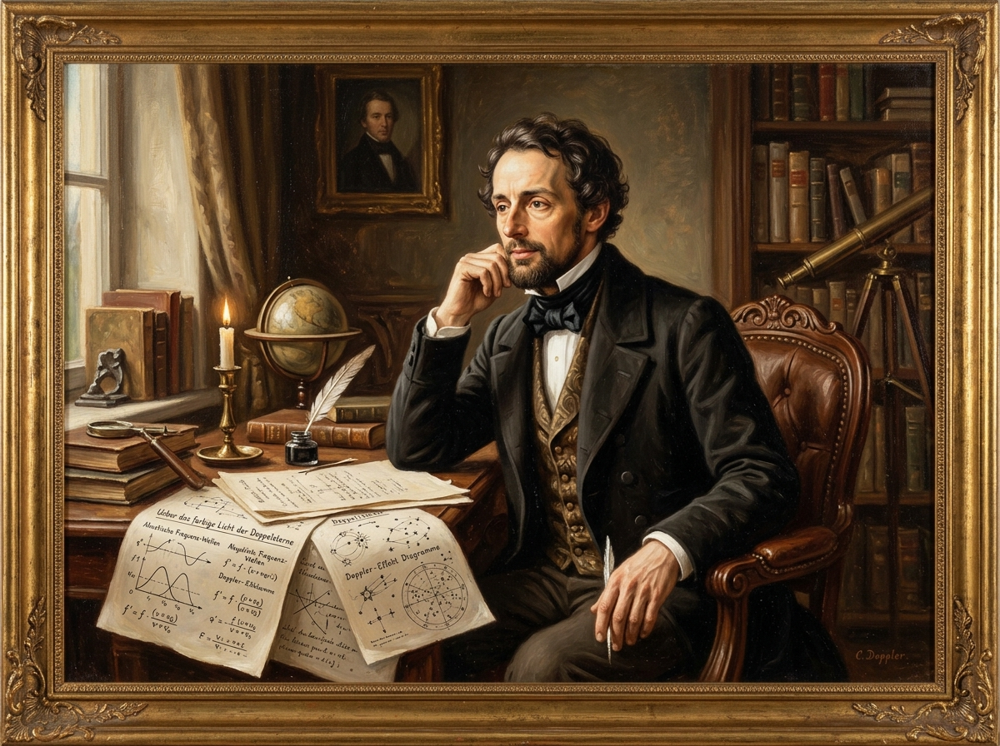
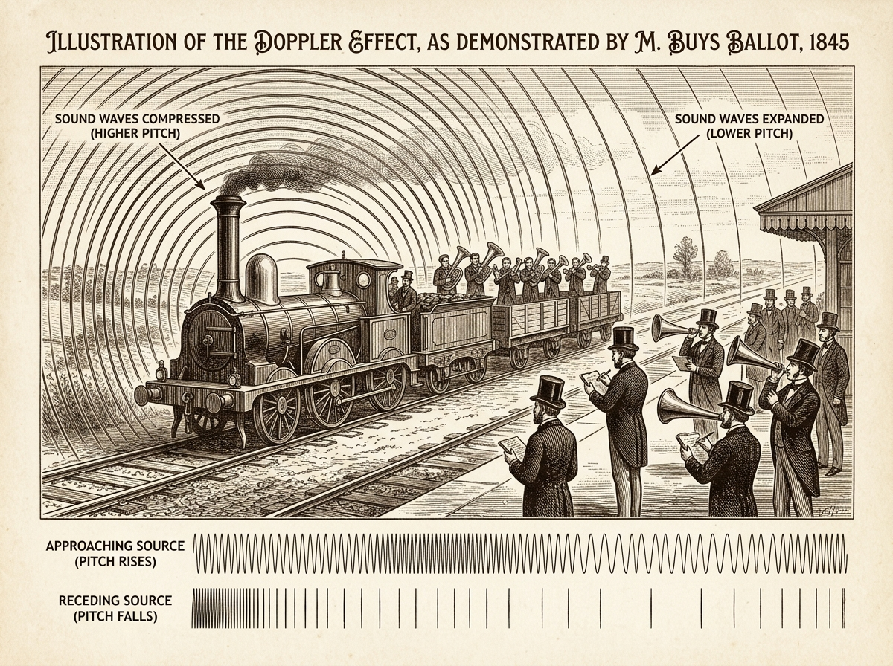
James Clerk Maxwell (Ondas Electromagnéticas)
Sintetizó la electricidad y el magnetismo en cuatro ecuaciones diferenciales maestras y demostró que las perturbaciones electromagnéticas se propagan en el vacío como ondas transversales a la velocidad de la luz $c = 1/\sqrt{\mu_0 \varepsilon_0}$.
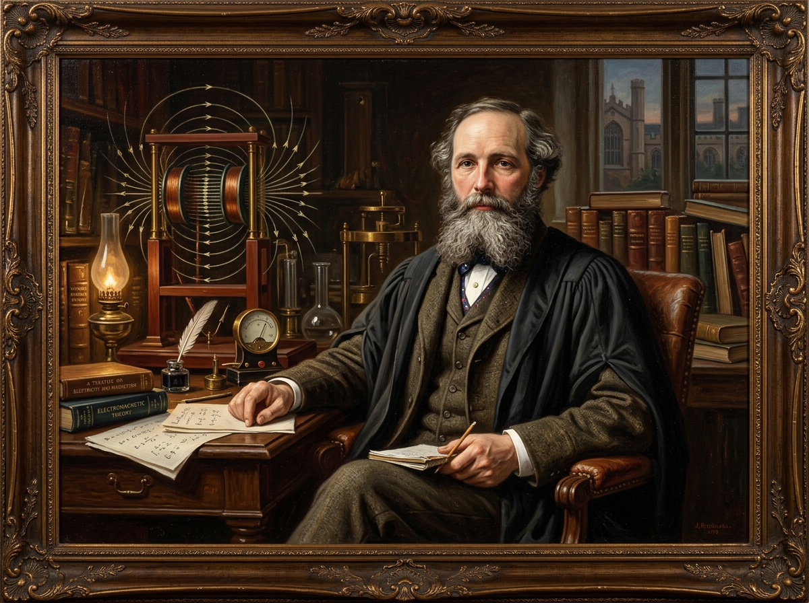
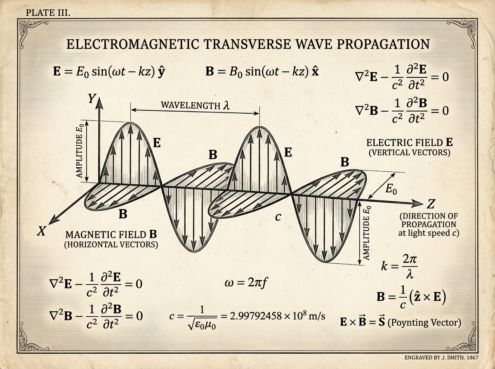
Albert Einstein (Predicción de Ondas Gravitacionales)
Resolvió las ecuaciones de campo linealizadas de la Relatividad General en el vacío demostrando que las perturbaciones métricas del espaciotiempo se propagan como ondas transversales cuadrupolares a la velocidad de la luz $c$, deduciendo la fórmula de radiación del cuadrupolo $h \propto \frac{2G}{c^4 r}\ddot{Q}$.
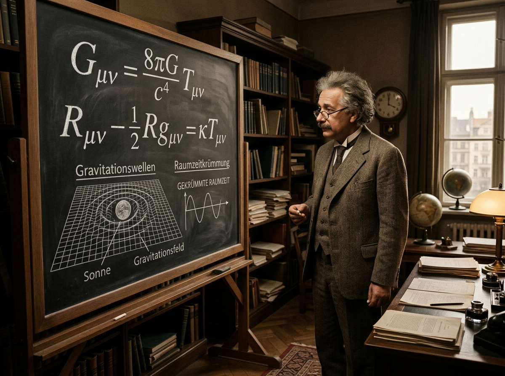
Colaboración Científica LIGO (Detección GW150914 & Premio Nobel)
Primera detección directa en la historia humana de una onda gravitacional utilizando interferometría láser de 4 km. La colisión de dos agujeros negros de 36 y 29 masas solares a 1.300 millones de años luz produjo una deformación métrica $\Delta L \sim 10^{-18}\text{ m}$. Premio Nobel de Física 2017 para Rainer Weiss, Barry Barish y Kip Thorne.
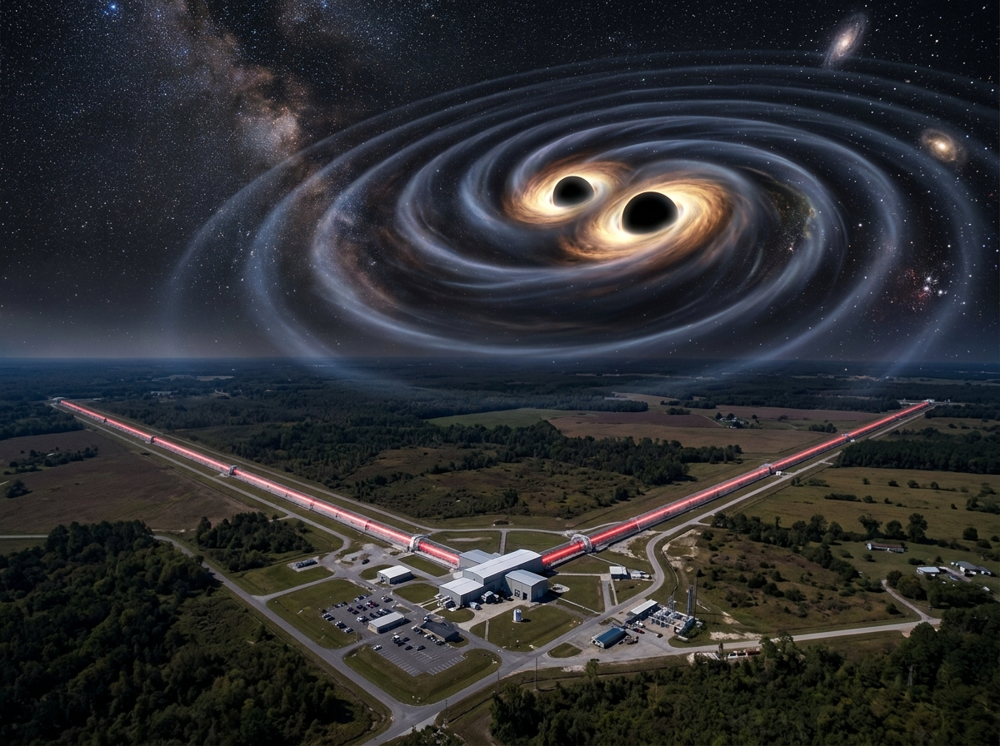
Conceptos del Movimiento Ondulatorio
Propiedades cinemáticas y dinámicas de la propagación de energía sin transporte neto de materia.
Onda Transversal (Mecánica, EM y Gravitacional)
La perturbación oscila en dirección estrictamente perpendicular ($\vec{k} \cdot \vec{\xi} = 0$, o $\vec{E} \perp \vec{B} \perp \vec{k}$) a la trayectoria de propagación. Abarca cuerdas tensas elásticas ($v = \sqrt{T_s/\mu}$), radiación electromagnética de Maxwell ($c = 1/\sqrt{\mu_0\varepsilon_0}$) y ondas gravitacionales de Einstein en gauge TT ($h_{\mu\nu}^{TT}$) con polarizaciones ortogonales cuadrupolares $h_+$ y $h_\times$.
Onda Longitudinal
El desplazamiento de las partículas del medio vibra de forma paralela ($\vec{v}_{\text{part}} \parallel \vec{v}$) a la línea de propagación mediante compresiones y rarefacciones sucesivas (ej: ondas sonoras en gases y fluidos).
Parámetros Cinemáticos y Angulares Canónicos
- • Longitud de Onda ($\lambda$): Distancia espacial mínima entre dos puntos en fase idéntica (m).
- • Periodo ($T$): Tiempo transcurrido para que un punto complete una oscilación temporal ($T = 1/f$).
- • Frecuencia ($f$): Número de crestas o ciclos por unidad de tiempo en Hertz ($\text{Hz} = 1/\text{s}$).
- • Número de Onda Angular ($k$): Densidad espacial de radianes: $k = 2\pi / \lambda$ ($\text{rad/m}$).
- • Frecuencia Angular ($\omega$): Rapidez de fase temporal: $\omega = 2\pi f = 2\pi/T$ ($\text{rad/s}$).
- • Rapidez de Fase ($v$): Velocidad de avance de los frentes de onda: $v = \lambda f = \omega / k$ ($\text{m/s}$).
Tabla 1: Magnitudes Físicas, Símbolos y Unidades en el SI
| Magnitud | Símbolo | Definición Operacional | Unidad SI |
|---|---|---|---|
| Ondulación / Perturbación Transversal | $y$ | $y(x,t) = A\sin(kx \mp \omega t + \phi)$ | Metro ($\text{m}$) |
| Amplitud de Onda | $A$ | $A = |y_{\max}|$ (Cresta / Valle) | Metro ($\text{m}$) |
| Longitud de Onda | $\lambda$ | $\lambda = v/f = 2\pi/k$ | Metro ($\text{m}$) |
| Frecuencia Temporal | $f$ | $f = 1/T = \omega/(2\pi)$ | Hertz ($\text{Hz}$) |
| Número de Onda | $k$ | $k = 2\pi/\lambda = \omega/v$ | Radian por metro ($\text{rad/m}$) |
| Tensión Mecánica | $T_s$ | Fuerza axial elástica en la cuerda | Newton ($\text{N}$) |
| Densidad Lineal | $\mu$ | $\mu = dm/dx = m/L$ | Kilogramo por metro ($\text{kg/m}$) |
| Potencia Media | $P_{\text{med}}$ | $P_{\text{med}} = \frac{1}{2}\mu v \omega^2 A^2$ | Watt ($\text{W}$) |
| Nivel Sonoro | $\beta$ | $\beta = 10\log_{10}(I/I_0)$ | Decibel ($\text{dB}$) |
Demostraciones Analíticas de Ondas
Deducción rigurosa paso a paso desde los principios de la mecánica de medios continuos.
1. Deducción de la Ecuación Diferencial en Cuerda Tensa
Considerando un elemento infinitesimal de cuerda de masa $dm = \mu \Delta x$ con tensión $T_s$. Por 2ª Ley de Newton vertical ($\Sigma F_y = dm \frac{\partial^2 y}{\partial t^2}$) y aproximación de ángulos pequeños ($\sin\theta \approx \tan\theta = \frac{\partial y}{\partial x}$):
2. Verificación de la Función de Onda Armónica $y(x,t)$
Evaluando $y(x,t) = A\sin(kx - \omega t)$ en las derivadas espaciales y temporales de segundo orden:
3. Transporte Energético y Potencia Media $P_{\text{med}}$
La potencia instantánea transmitida por la fuerza elástica vertical es $P(x,t) = F_y v_y = -T_s \left(\frac{\partial y}{\partial x}\right)\left(\frac{\partial y}{\partial t}\right)$:
4. Deducción de Ondas Estacionarias y Localización de Nodos
Superposición de dos ondas viajeras de igual amplitud y frecuencia propagándose en sentidos opuestos:
Plano Cartesiano de Ondas Estilo "GeoGebra"
Cuadrícula milimetrada, inspección de coordenadas espaciales, ondas viajeras y superposición en tiempo real.
Onda Transversal en Cuerda Tensa
Modelación física continua a 60 FPS con perlas elásticas, vectores cinemáticos y potencia transmitida.
Simulación de Cuerda Elástica
Modos Normales & Ondas Estacionarias
Modos NormalesVisualización cuantitativa de nodos, antinodos y superposición armónica en cuerdas elásticas con extremos fijos.
Laboratorio de Fenómenos
Efecto Doppler: Fenomenología y Formulación Matemática
Acústica & AstrofísicaDescubrimiento de Christian Doppler (1842), deducción de ecuaciones para fuentes y receptores en movimiento relativo, régimen supersónico (Cono de Mach) y corrimiento espectral en astrofísica.
El Efecto Doppler es la variación aparente en la frecuencia de una onda percibida por un observador cuando existe movimiento relativo entre la fuente emisora y el receptor a través del medio de propagación. Hacia adelante los frentes se comprimen ($\lambda' < \lambda_0 \implies f' > f_0$, tono más agudo), y hacia atrás se dilatan ($\lambda' > \lambda_0 \implies f' < f_0$, tono más grave).
1. Receptor en Movimiento
Fuente en Reposo ($v_s = 0$)La longitud de onda en el medio no cambia ($\lambda = v / f_0$). La rapidez relativa de intercepción de frentes por el receptor es $v' = v \pm v_o$:
2. Fuente en Movimiento
Receptor en Reposo ($v_o = 0$)En cada periodo $T$, la fuente avanza $v_s T$, comprimiendo la distancia física entre crestas sucesivas: $\lambda' = \lambda_0 \mp v_s T$:
3. Ecuación General Unificada
Movimiento Simultáneo en 1DCombinando ambos efectos cinemáticos respecto al medio en reposo (donde $v$ es la rapidez del sonido):
Signos inferiores (-/+): ALEJAMIENTO.
Régimen Supersónico & Cono de Mach
Cuando la velocidad de la fuente supera a la del sonido ($v_s > v$), el número de Mach $M = v_s / v > 1$. Los frentes esféricos se superponen constructivamente formando una envolvente cónica tangente (onda de choque / estampido sónico):
Doppler Relativista & Astrofísica
Para ondas electromagnéticas en el vacío ($c$), debido a la dilatación temporal de Lorentz, no existe medio material preferente:
Laboratorio Virtual: Simulador Efecto Doppler
SUBSÓNICOVisualización 2D interactiva de frentes de onda circulares, compresión/dilatación espectral, formación del cono de Mach y síntesis acústica en tiempo real con Web Audio API.
Cinemática de Propagación en el Plano
Ondas Transversales: Mecánica, EM & Espacio-Tiempo
Comparativa 3DAnálisis geométrico y físico del movimiento transversal: desde las cuerdas de d'Alembert hasta los campos electromagnéticos y las perturbaciones métricas del espaciotiempo.
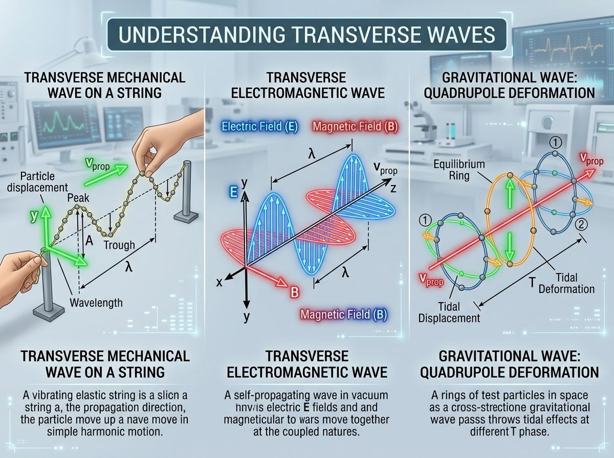
1. Onda Mecánica
Cuerda 1D • Medio ElásticoOscilación perpendicular a propagación ($\vec{v}_{\text{part}} \perp \vec{v}$). Requiere tensión $T_s$ e inercia lineal $\mu$.
2. Onda EM
Vacío 3D • Spin 1 (Fotón)Campos $\vec{E} \perp \vec{B} \perp \vec{k}$ autosostenidos en vacío. Polarizaciones lineales y circulares a $90^\circ$.
3. Gravitacional
Métrica 4D • Spin 2 (Gravitón)Deformación cuadrupolar a $c$. En gauge TT modula distancias transversas. Modos $h_+, h_\times$ a $45^\circ$.
Polarización del Espacio-Tiempo
Modos CuadrupolaresModelación dinámica de la radiación gravitacional en gauge transverso sin traza ($TT$). Deformación de marea sobre un anillo de partículas en caída libre.
Simulador: Polarización Transversal del Espacio-Tiempo
El Proyecto LIGO & Detección Óptica
Nobel de Física 2017Medición interferométrica de deformaciones métricas cuánticas ($\Delta L \sim 10^{-18}\text{ m}$) y la detección directa de fusiones de agujeros negros.
Hito Histórico: Detección GW150914
14 Sep 2015LIGO (Hanford y Livingston, EE. UU.) opera dos interferómetros Michelson-Fabry-Pérot con brazos perpendiculares de 4 km en ultra-alto vacío. Detectó la fusión de dos agujeros negros de $36\,M_\odot$ y $29\,M_\odot$ a 1.300 millones de años luz, liberando en 0.2 s una potencia equivalente a toda la luz visible del universo observable.
Sensibilidad extrema: $\Delta L = h \cdot L \approx 4 \times 10^{-18}\text{ m}$ (¡mil veces menor que el radio de un protón!). Los espejos cuelgan de péndulos cuádruples con aislamiento sísmico activo.
Laboratorio: Interferómetro LIGO & Señal Chirp
Simulación ÓpticaHaz láser dividido, deformación de brazos en contrafase, formación de franjas de interferencia y síntesis de audio de la señal chirp GW150914.
Laboratorio: Interferómetro LIGO & Oscilograma Chirp
Problemas Resueltos Paso a Paso
Código cromático normativo: Datos (Azul), Incógnitas (Rojo), Despeje (Naranja), Verificación (Verde).
• Masa: m = 3.25 × 10⁻³ kg
• Tensión: Ts = 120 N
• Amplitud: A = 0.004 m
• Frecuencia: f = 220 Hz
• Rapidez de fase: v = ? [m/s]
• Longitud de onda: λ = ? [m]
• Rapidez transversal máx: vy,max = ? [m/s]
• Potencia media: Pmed = ? [W]
• Análisis Físico: La rapidez de avance de la onda ($v = 154.92 \text{ m/s}$) es 28 veces superior a la velocidad de movimiento de las partículas ($v_{y,\max} = 5.53 \text{ m/s}$), confirmando que la onda transmite energía sin desplazar materia a lo largo del eje $x$.
Taller Interactivo de Problemas
Introduce los parámetros de tu sistema ondulatorio. El motor pedagógico formulará la resolución completa aplicando las 5 fases canónicas.
Parámetros de Entrada del Sistema
Haz clic en el botón superior para generar la deducción matemática en las 5 fases normalizadas.
Glosario de Conceptos Físicos de Ondas
Términos técnicos, formalismo matemático y leyes ondulatorias con buscador reactivo en vivo.
Amplitud ($A$)
Máximo desplazamiento transversal de las partículas respecto a su posición de equilibrio elástico en metros ($\text{m}$).
Antinodo (Cresta / Valle)
Punto de una onda estacionaria donde la interferencia constructiva produce una oscilación con amplitud máxima ($2A$), alternando periódicamente entre crestas y valles.
Atenuación
Disminución gradual de la amplitud y energía de una onda al propagarse en un medio disipativo o por dispersión geométrica esférica ($I \propto 1/r^2$).
Decibel ($\text{dB}$)
Unidad logarítmica adimensional para medir el nivel de intensidad sonora relativo al umbral de audición humana: $\beta = 10\log_{10}(I/I_0)$.
Deformación Métrica (Strain $h$)
Variación fraccional de longitud inducida por una onda gravitacional en el espacio: $h = 2\Delta L / L$. Para fuentes astrofísicas típicas en la Tierra, su orden es $h \sim 10^{-21}$.
Difracción
Propiedad ondulatoria por la cual un frente de onda se curva o flexiona al sortear un obstáculo o pasar a través de una abertura de tamaño comparable a $\lambda$.
Dispersión
Fenómeno en el cual la rapidez de fase de la onda depende de su frecuencia o longitud de onda ($v = v(f)$), deformando los paquetes de onda.
Efecto Doppler
Variación aparente en la frecuencia de una onda debida al movimiento relativo entre la fuente emisora y el receptor u observador.
Fórmula del Cuadrupolo
Ecuación de Einstein (1916) que relaciona la potencia radiada por ondas gravitacionales con la tercera derivada del tensor cuadrupolar de masa: $P_{\text{GW}} = \frac{G}{5c^5}\langle \overset{\dots}{Q}_{ij}\overset{\dots}{Q}^{ij} \rangle$.
Frente de Onda
Superficie geométrica continua que une todos los puntos del medio que se encuentran en el mismo estado de fase en un instante dado.
Función de Onda ($y(x,t)$)
Expresión matemática que describe la perturbación de cualquier punto del medio en cualquier posición $x$ y en cualquier instante $t$.
Interferómetro LIGO
Detector óptico Michelson-Fabry-Pérot con brazos de 4 km que mide oscilaciones de espejos de $10^{-18}\text{ m}$ usando láseres Nd:YAG de 1064 nm en ultra-alto vacío.
Interferencia
Efecto físico resultante de la superposición de dos o más ondas coherentes que coinciden en el mismo punto del espacio y tiempo.
Longitud de Onda ($\lambda$)
Distancia espacial mínima entre dos puntos consecutivos que se encuentran en el mismo estado de fase en metros ($\text{m}$).
Modo Normal
Patrón espacial característico de vibración estacionaria donde todos los puntos del sistema oscilan armónicamente con la misma frecuencia $f_n$.
Nodo
Punto inmóvil de una onda estacionaria donde la interferencia destructiva es permanente y la amplitud resultante es idénticamente cero.
Número de Onda ($k$)
Magnitud espacial que expresa la cantidad de radianes de ciclo por unidad de longitud: $k = 2\pi/\lambda$ en radianes por metro ($\text{rad/m}$).
Onda Estacionaria
Onda que no transporta energía neta, producida por la superposición de dos ondas armónicas idénticas que viajan en sentidos contrarios.
Onda Gravitacional
Ondulación transversal métrica del espacio-tiempo generada por masas aceleradas con cuadrupolo dinámico, que se propaga a la velocidad de la luz $c$.
Polarizaciones $h_+$ y $h_\times$
Los dos modos transversales ortogonales e independientes en el gauge TT de la relatividad general, rotados $45^\circ$ entre sí (bosón de espín 2).
Principio de Superposición
Ley lineal que establece que cuando dos o más ondas interactúan en un medio lineal, el desplazamiento neto es la suma algebraica de cada onda.
Señal Chirp Gravitacional
Evolución ondulatoria característica emitida durante la coalescencia espiral de binarias compactas, con incremento monótono en frecuencia y amplitud hasta el merger.
Referencias Bibliográficas (APA 7)
Tratados y manuales canónicos de física universitaria y literatura astrofísica seminal normalizados bajo normas APA 7.ª edición.
Contraportada y Créditos Académicos
Registro de cátedra y culminación del módulo interactivo de movimiento ondulatorio.
FÍSICA III: ONDAS Y OSCILACIONES
Cuaderno Digital Científico e Interactivo • Movimiento Ondulatorio
Este cuaderno interactivo integra rigor conceptual, deducciones formales paso a paso, representaciones dinámicas de ondas continuas estilo GeoGebra y simulaciones numéricas en tiempo real a 60 FPS.
- David Alejandro Ramirez Bolaños
- Steven Vélez Garces
- Sergio Andrés Velásquez Arana
• Asignatura: Física III (Ondas y Oscilaciones)
• Formato: Cuaderno Digital Multiplataforma (PWA)
• Edición: 2026 • Versión 2.0